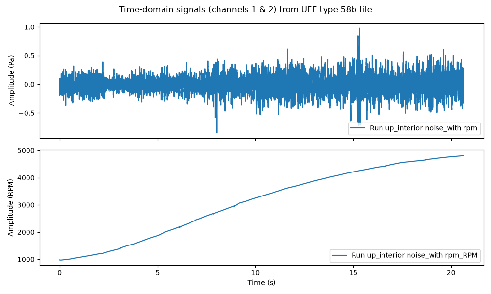
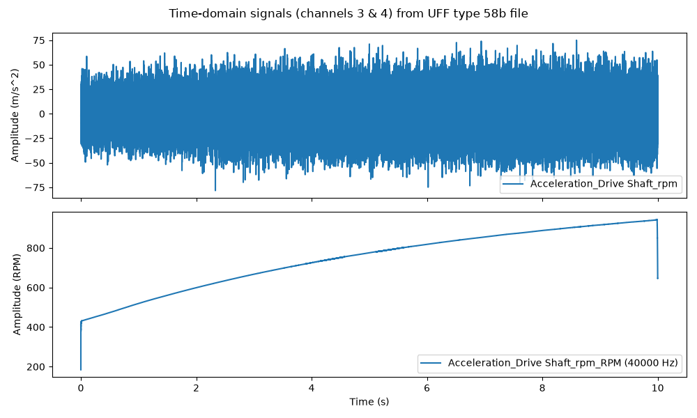
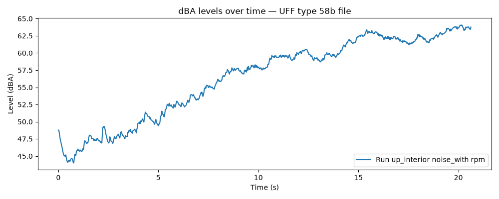

Note
Go to the end to download the full example code.
Load and use data from UFF/UNV files#
This example shows how to load data from UFF (Universal File Format) files, extract time-domain signals, convert them into DPF fields compatible with PyAnsys Sound, and then compute and display dBA levels over time.
The pyuff package (https://pyuff.readthedocs.io/en/latest/) is a PyAnsys Sound optional
dependency that can be installed via pip install ansys-sound-core[full].
Note
Only time data blocks of types 58 and 58b, evenly spaced in time, are supported by PyAnsys Sound.
The example processes one UFF file:
4 channels_type58b.uff— contains data blocks of type 58b (binary time data)
But it works with ASCII time data blocks (type 58) as well, so you can try it with your own UFF files containing type 58 or type 58b data blocks.
Set up analysis#
Setting up the analysis consists of loading the required libraries, connecting to the DPF server, and downloading the necessary data files.
import matplotlib.pyplot as plt
import numpy as np
try:
import pyuff
except ImportError:
raise ImportError(
"The 'pyuff' package is required for this example. "
"Install it with: pip install ansys-sound-core[full]"
)
# Load Ansys libraries.
from ansys.sound.core.examples_helpers import download_uff_sample_4_channels_type58b
from ansys.sound.core.server_helpers import connect_to_or_start_server
from ansys.sound.core.signal_utilities import CreateSignalField
from ansys.sound.core.standard_levels import LevelOverTime
# Connect to a remote DPF server or start a local DPF server.
my_server, my_license_context = connect_to_or_start_server(use_license_context=True)
# Download the necessary files for this example.
path_uff_type58b = download_uff_sample_4_channels_type58b()
Load and process a UFF file#
In this first part, we load a UFF file containing data blocks of type 58b (binary time data), extract two signals, convert them into DPF fields, and compute dBA levels over time.
Load the UFF file#
Load the downloaded UFF file using pyuff.
uff_file_58b = pyuff.UFF(path_uff_type58b)
# List all data blocks.
set_types_58b = uff_file_58b.get_set_types()
n_blocks_58b = len(set_types_58b)
print(f"File '{path_uff_type58b}' contains {n_blocks_58b} data block(s).")
for i, block_type in enumerate(set_types_58b):
print(f" Block {i + 1} (index {i}): type {block_type}")
File 'C:\Users\ansys\AppData\Local\Ansys\ansys_sound_core\examples\4_channels_type58b.uff' contains 4 data block(s).
Block 1 (index 0): type 58
Block 2 (index 1): type 58
Block 3 (index 2): type 58
Block 4 (index 3): type 58
Extract data from all blocks#
We read the datasets, extract the time-domain data, the time step (“abscissa_inc”), and the block description. We also verify that the data is evenly spaced.
datasets_58b = []
for idx in range(n_blocks_58b):
block = uff_file_58b.read_sets(idx)
# Verify evenly spaced time steps.
spacing = block.get("abscissa_spacing", None)
if spacing is not None and spacing != 1:
raise ValueError(
f"Block at index {idx} does not have evenly spaced time data "
f"(abscissa_spacing='{spacing}'). Only evenly spaced time data is supported."
)
datasets_58b.append(block)
block_name = block.get("id1") # id1 contains the signal name
time_step = block["abscissa_inc"]
fs = 1.0 / time_step
n_samples = len(block["data"])
print(
f"\nBlock {idx + 1} (index {idx}):"
f"\n Name: {block_name}"
f"\n Time step (time_step): {time_step} s"
f"\n Sampling frequency: {fs:.1f} Hz"
f"\n Number of samples: {n_samples}"
)
Block 1 (index 0):
Name: Run up_interior noise_with rpm
Time step (time_step): 2.26757e-05 s
Sampling frequency: 44100.1 Hz
Number of samples: 909956
Block 2 (index 1):
Name: Run up_interior noise_with rpm_RPM
Time step (time_step): 2.26757e-05 s
Sampling frequency: 44100.1 Hz
Number of samples: 909956
Block 3 (index 2):
Name: Acceleration_Drive Shaft_rpm
Time step (time_step): 2.5e-05 s
Sampling frequency: 40000.0 Hz
Number of samples: 399999
Block 4 (index 3):
Name: Acceleration_Drive Shaft_rpm_RPM (40000 Hz)
Time step (time_step): 2.5e-05 s
Sampling frequency: 40000.0 Hz
Number of samples: 399999
Convert to DPF fields using CreateSignalField#
For each extracted signal, we create a DPF Field
using the CreateSignalField class.
fields_58b = []
signal_names_58b = []
signal_units_58b = []
for i, block in enumerate(datasets_58b):
signal_data = np.array(block["data"], dtype=np.float64)
time_step = block["abscissa_inc"]
fs = 1.0 / time_step
signal_name = block.get("id1") # id1 contains the signal name
signal_unit = block.get("ordinate_axis_units_lab")
creator = CreateSignalField(data=signal_data, sampling_frequency=fs, unit=signal_unit)
creator.process()
field = creator.get_output()
fields_58b.append(field)
signal_names_58b.append(signal_name)
signal_units_58b.append(signal_unit)
print(
f"Created DPF Field for '{signal_name}' ({len(signal_data)} samples, "
f"fs={fs:.1f} Hz), unit='{signal_unit}'."
)
Created DPF Field for 'Run up_interior noise_with rpm' (909956 samples, fs=44100.1 Hz), unit='Pa'.
Created DPF Field for 'Run up_interior noise_with rpm_RPM' (909956 samples, fs=44100.1 Hz), unit='RPM'.
Created DPF Field for 'Acceleration_Drive Shaft_rpm' (399999 samples, fs=40000.0 Hz), unit='m/s^2'.
Created DPF Field for 'Acceleration_Drive Shaft_rpm_RPM (40000 Hz)' (399999 samples, fs=40000.0 Hz), unit='RPM'.
Plot the time-domain signals#
Display the two extracted signals. first figure: channels 1 and 2
fig1, axs1 = plt.subplots(2, figsize=(10, 6), sharex=True)
fig1.suptitle("Time-domain signals (channels 1 & 2) from UFF type 58b file")
for i in range(2):
time_data = fields_58b[i].time_freq_support.time_frequencies.data
axs1[i].plot(time_data, fields_58b[i].data, label=signal_names_58b[i])
axs1[i].set_ylabel(f"Amplitude ({signal_units_58b[i]})")
axs1[i].legend(loc="lower right")
axs1[-1].set_xlabel("Time (s)")
plt.tight_layout()
plt.show()
# Second figure: channels 3 and 4
fig2, axs2 = plt.subplots(2, figsize=(10, 6), sharex=True)
fig2.suptitle("Time-domain signals (channels 3 & 4) from UFF type 58b file")
for i in range(2, 4):
time_data = fields_58b[i].time_freq_support.time_frequencies.data
axs2[i - 2].plot(time_data, fields_58b[i].data, label=signal_names_58b[i])
axs2[i - 2].set_ylabel(f"Amplitude ({signal_units_58b[i]})")
axs2[i - 2].legend(loc="lower right")
axs2[-1].set_xlabel("Time (s)")
plt.tight_layout()
plt.show()


C:\Users\ansys\actions-runner\_work\pyansys-sound\pyansys-sound\examples\014_load_uff_data.py:171: UserWarning: FigureCanvasAgg is non-interactive, and thus cannot be shown
plt.show()
C:\Users\ansys\actions-runner\_work\pyansys-sound\pyansys-sound\examples\014_load_uff_data.py:184: UserWarning: FigureCanvasAgg is non-interactive, and thus cannot be shown
plt.show()
Compute dBA levels over time#
For each signal, compute the dBA level over time using LevelOverTime.
level_objects_58b = []
for field, name in zip(fields_58b, signal_names_58b):
if field.unit != "Pa":
print(
f"Skipping level computation for '{name}' since its unit is '{field.unit}' (not 'Pa')."
)
continue
level_over_time = LevelOverTime(
signal=field,
scale="dB",
reference_value=2e-5,
frequency_weighting="A",
time_weighting="Fast",
)
level_over_time.process()
level_objects_58b.append(level_over_time)
level_max = level_over_time.get_level_max()
print(f"Max dBA level for '{name}': {level_max:.1f} dBA")
Max dBA level for 'Run up_interior noise_with rpm': 64.1 dBA
Skipping level computation for 'Run up_interior noise_with rpm_RPM' since its unit is 'RPM' (not 'Pa').
Skipping level computation for 'Acceleration_Drive Shaft_rpm' since its unit is 'm/s^2' (not 'Pa').
Skipping level computation for 'Acceleration_Drive Shaft_rpm_RPM (40000 Hz)' since its unit is 'RPM' (not 'Pa').
Plot dBA levels over time#
Display the computed dBA level over time for one signal.
plt.figure(figsize=(10, 4))
plt.title("dBA levels over time — UFF type 58b file")
level_obj = level_objects_58b[0]
name = signal_names_58b[0]
time_scale = level_obj.get_time_scale()
level_data = level_obj.get_level_over_time()
plt.plot(time_scale, level_data, label=name)
plt.xlabel("Time (s)")
plt.ylabel("Level (dBA)")
plt.legend(loc="lower right")
plt.tight_layout()
plt.show()

C:\Users\ansys\actions-runner\_work\pyansys-sound\pyansys-sound\examples\014_load_uff_data.py:231: UserWarning: FigureCanvasAgg is non-interactive, and thus cannot be shown
plt.show()
Conclusion#
This example demonstrated how to:
Load UFF/UNV files using the
pyuffpackageCheck the files’ contents
Verify that the time data is evenly spaced
Extract time-domain signals and convert them into DPF fields using
CreateSignalFieldCompute and display dBA levels over time using
LevelOverTime
Only data blocks of (type 58 and 58b) with evenly spaced time data are supported by PyAnsys Sound.
The pyuff package can be installed as an optional dependency via
pip install ansys-sound-core[full].
Total running time of the script: (0 minutes 10.233 seconds)